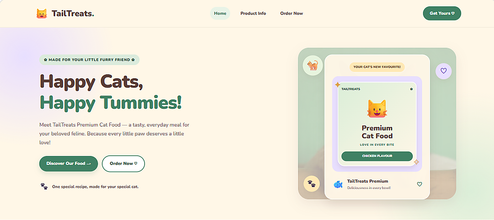
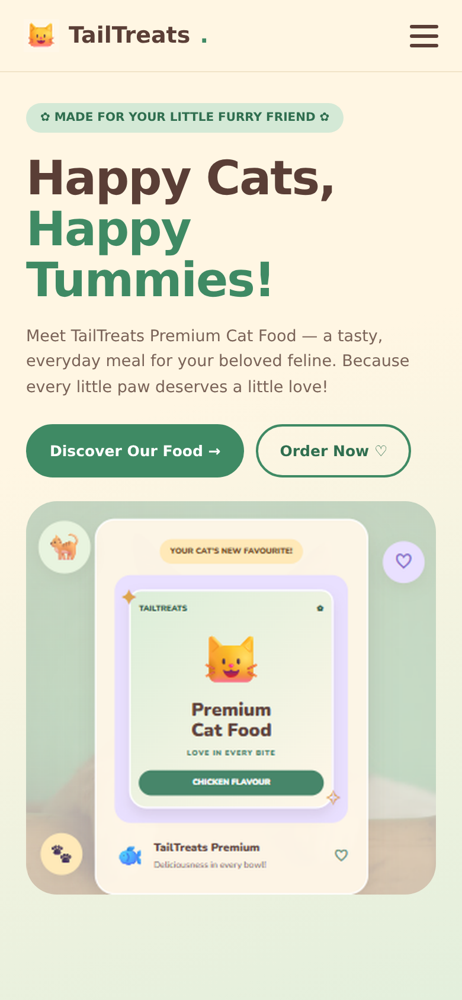

Computer Science Student | Exploring Technology & Innovation
MinahilMasood
I turn logic into interfaces people enjoy scrolling through.
ScrollCurious about how things work, and how they feel to use.
I'm Minahil, a fifth-semester BS Computer Science student at Qarshi University, Lahore. My studies have introduced me to programming, object-oriented design, data structures, databases, and web technologies.
I enjoy solving programming challenges and applying classroom concepts to practical projects. My goal is to keep growing as a developer and build useful digital solutions. Outside the IDE: reading, cooking, gardening, and quality time with family.
Skills built through practice
Programming Languages
Programming fundamentals and logical problem solving.
- C++
- Java
- Python
- SQL
Web Technologies
Building structured, styled, and interactive web pages.
- HTML5
- CSS3
- JavaScript
Computer Science
Fundamental concepts used to design and understand software.
- OOP
- DSA
- DBMS
- Networking Basics
Development Tools
Tools used for coding, version control, and productivity.
- VS Code
- NetBeans
- Git
- GitHub
Productivity & Creative Tools
Documentation, presentations, organization, and visual design.
- Microsoft Word
- Microsoft Excel
- PowerPoint
- Canva
Studies
- Bachelor of Science in Computer ScienceQarshi University, Lahore. Now
Currently in the fifth semester, studying computer science concepts and developing programming skills through academic projects.
- Programming
- Data Structures
- Software Development
- Intermediate in ICS2022–2024
Physics, Mathematics & Computer Science. Built an academic foundation in computing and related subjects before beginning undergraduate studies.
- Matriculation in Computer Science2020–2022
Developed an early interest in computing and established the foundation for further studies in computer science.
Courses & professional development
- Google AI EssentialsArtificial Intelligence
- Introduction to AIArtificial Intelligence Fundamentals
- Maximize Productivity with AI ToolsAI-Assisted Productivity
- Discover the Art of PromptingPrompting and AI Tools
- Use AI ResponsiblyResponsible AI Use
- Stay Ahead of the AI CurveAI Awareness and Development
- Foundations of Project ManagementProject Management
- Project Initiation: Starting a Successful ProjectProject Planning and Initiation
How I work
Quick Learner
Willing to explore unfamiliar concepts and learn new tools.
Problem Solver
Approaches challenges with logical thinking and a willingness to improve.
Collaborative
Values cooperation, communication, and learning with others.
Adaptable
Open to feedback and ready to adjust when learning something new.
Ideas into implementation.
Academic and web development projects where I apply programming concepts to practical problems.
Library Seat & Book Finder
A Java-based library application designed to help users find books and library seats through a desktop interface.
- Book Search
- Seat Finding
- Java Swing
- Java
- OOP
- GUI

Library Book Management System
A C++ application for managing book records and handling requests using fundamental data structures.
- Book Records
- Request Handling
- Priority Queues
- C++
- Linked Lists
- Stacks & Queues

Porter Network Distribution System
A C++ network simulation representing connected distribution points, sensor readings, and recorded leak events.
- Pipe Connections
- Sensor Monitoring
- Leak History
- C++
- Arrays
- Linked Lists

University Cricket Club Website
A university cricket club website featuring structured content, navigation, and a responsive visual layout.
- Home Page
- Events
- Registration
- HTML5
- CSS3
- Responsive Design

Campus Cafe Website
A multi-page website for a campus café, with a home page, menu and order page. It presents quick pickup, student prices, a quiet study corner and the opening hours.
- Home
- Menu
- Order
- HTML5
- CSS3
- Responsive Design

TailTreats Website
A multi-page website for a premium cat food brand, with a home page, product info and an order page. It introduces the brand and its three flavour options: chicken, salmon and tuna.
- Home
- Product Info
- Order Now
- HTML5
- CSS3
- Responsive Design

Now playing: TailTreats Website
Scroll on. The laptop shows the desktop version, then the phone drops in with the mobile version.

